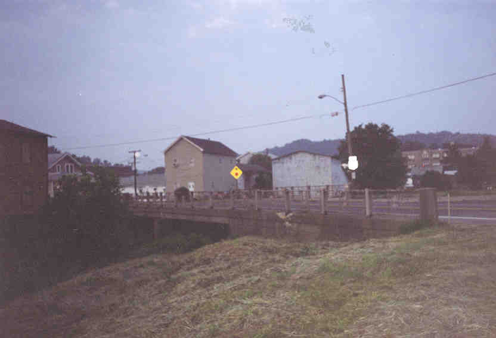
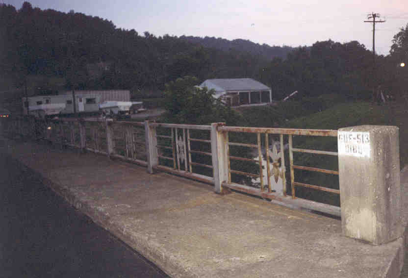

According to Chris Woodyard's Haunted Ohio and other sources, the Route 513 Bridge in Quaker City is haunted by a ghost who sometimes rides along in carriages as they approach his bridge. He is also known to tap walkers on the shoulder. However, legend has it that he cannot cross running water, so if you make it to the other side of the bridge he won't follow you.

On July 5, 2000 I visited the Route 513 Bridge at dusk, so I could take some photos and then see if the ghost would talk to me or at least tap me on the shoulder. I didn't have a carriage, but I did have my old car.

I went to this one alone, since everybody was busy doing other things for the Fourth of July weekend. Quaker City is a nice little town, most famous as the exit on I-70 with the big Adult Video Store. The town itself lies south of the exit, in Guernsey County.

The bridge is pretty creepy-looking, with a dark cavern underneath where the creek runs. I took some photos and then hung around while it got dark. Then I crossed it, first one way and then the other, since I don't know which side the ghost is said to haunt. I walked down to the water and tried to talk to the ghost. Nothing.
This was a pretty vague story anyway. Does anyone know more about the legend? I couldn't seem to find the ghost.
Back
forgottenohio@yahoo.com